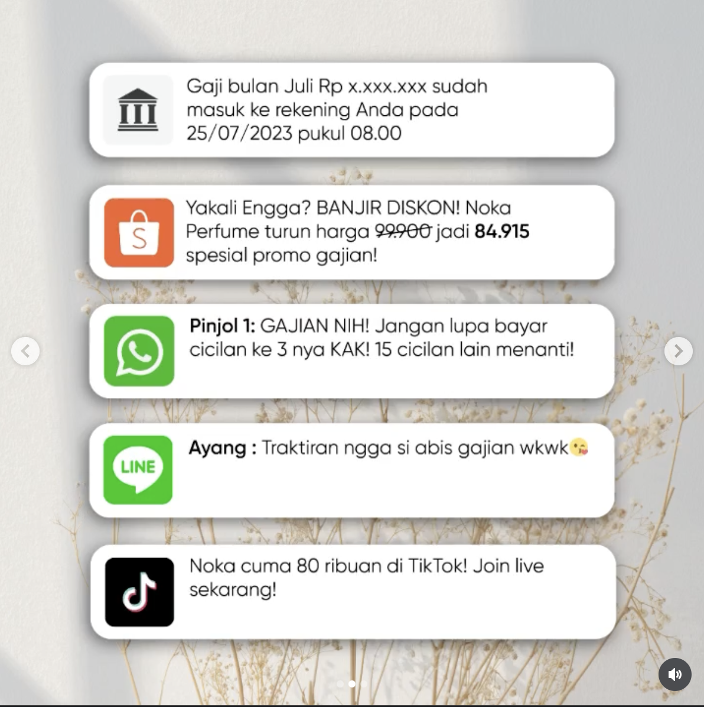

Meeting the audience in their actual moment.
Situation: Noka Perfume needed to run sale campaigns for major Indonesian shopping events — 6.6, 8.8, and payday sale — without falling into the trap of looking like every other brand screaming discount codes. In a crowded market, a sale post that only says "PROMO DISKON!" gets scrolled past.
Task: My job was to lead the concept and copy for these campaigns. The brief wasn't just "announce the sale" — it was to make the sale feel like it was for the audience, not at them. I was responsible for Instagram feed copy, Stories, Reels scripts, and coordinating brand collaborations.
Action: At first, I was still following the old approach because we were in the process of figuring out which direction we wanted to take. Once I understood that effective content is about actually telling a story rather than simply communicating a promotion, I started shifting my approach.
Instead of leading with a discount, I began with a feeling and a relatable situation. For the 25 July payday sale, I created a carousel that opened with a series of fake notification screens — a salary alert, a Shopee promo, a loan reminder, and a message from a partner asking for a treat — before eventually revealing the Noka promotion at the bottom. The idea was to capture the exact chaotic, relatable moment people experience on payday and naturally position the promotion within that story.
For the 6.6 campaign, I also coordinated a giveaway collaboration with Ella Beauty Store, designing the mechanics to generate brand exposure while simultaneously encouraging organic follower growth.
Result: The Giveaway x Ella Beauty Store collaboration post pulled 1,250 likes and 739 comments — Noka's highest-performing collaboration content during my tenure. The payday campaign concept was recognized internally as one of the most on-brand sale executions we'd done.
